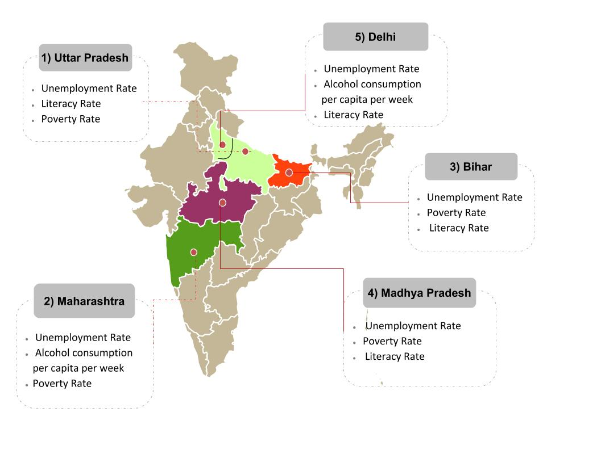

| MAP SHOWING HIGH DENSITY ZONES IN INDIA FOR KIDNAPPINGS CASES | LIST OF STATES ACCORDING TO KIDNAPPING CASES REGISTERED IN 2016 | ||
|  | 1> UTTAR PRADESH 18.39 % | 2> MAHARASHTRA 10.80 % | 3> BIHAR 8.47 % |
| 4> MADHYA PRADESH 8.24 % | 5> DELHI 7.66 % | 6> ASSAM 7.09 % | |
| 7> WEST BENGAL 6.99 % | 8> RAJASTHAN 6.13 % | 9> HARYANA 4.55 % | |
| 10> ODISHA 3.52 % | 11> KARNATAKA 3.37 % | 12> GUJARAT 3.22 % | |
| 13> CHHATTISGARH 2.40 % | 14> PUNJAB 1.84 % | 15> JHARKHAND 1.51 % | |
| 16> TAMIL NADU 1.41 % | 17> ANDHRA PRADESH 1.06 % | 18> JAMMU & KASHMIR 0.94 % | |
| 19> UTTARAKHAND 0.91 % | 20> HIMACHAL PRADESH 0.34 % | 21> KERALA 0.28 % | |
| 22> MEGHALAYA 0.18 % | 23> MANIPUR 0.17 % | 24> TRIPURA 0.16 % | |
| 25> ARUNACHAL PRADESH 0.13 % | 26> GOA 0.12 % | 27> NAGALAND 0.11 % | |
| 28> SIKKIM 0.01 % | 29> MIZORAM 0.01 % | ||